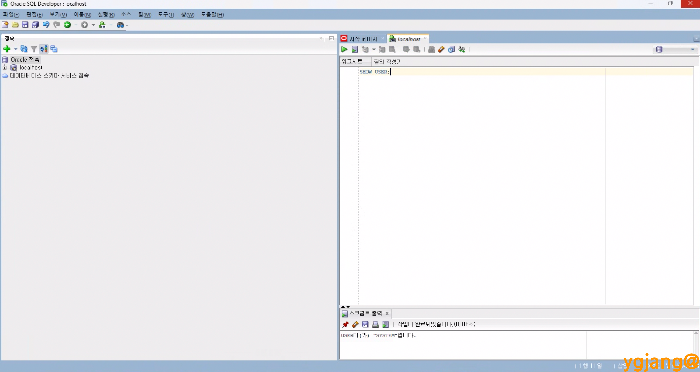

Oracle SQL Developer 설치
Windows 11 Pro (25H2, 26200.7922) 기준
-
설치 파일 다운로드 : https://www.oracle.com/database/sqldeveloper/
- Java 설치가 안 되어 있을 경우:

-
파일 압축 해제 및
sqldeveloper.exe파일 실행
-
완료

-
접속 테스트
- 초기 화면 중 접속 창에서 + 버튼을 클릭하거나 Oracle 접속을 우클릭하여 새 접속 클릭
- 새로 만들기/데이터베이스 접속 선택 창에서 정보 입력
- Name > localhost
- 사용자 이름 > system
- 비밀번호 > 기존 설정한 비밀번호
- 테스트 > 접속 순으로 실행
